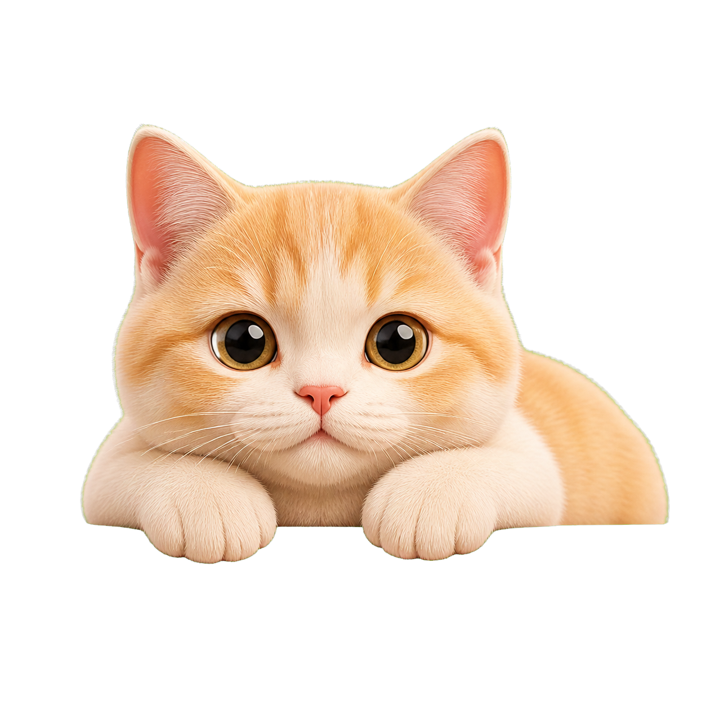

智能饮水舱
8°C 清凉 / 45°C 恒温，它今天喝了 12 次水。
了解更多CORE PRODUCT
虹吸循环、毛细渗透、静音星流道与恒温暖洋层，把宇宙物理融入一台宠物每天都会靠近的生活家具。


DATA · 恒星观测
第一枚硅基探针从饮水开始，记录饮水量、频次、水温与靠近时长，持续建立专属于它的健康基线。

今日活动峰值 14:20 · 比昨日 +6%
DIGITAL TWIN · 数字孪生
智能硬件采集的长期数据，持续构建它的行为节律，让数字孪生拥有习惯、情绪和记忆。
你拥有数据的控制权：查看、导出或删除。数字生命建立在授权、隐私和信任之上。
LIFE · 生活
离家、异常提醒、宠物记忆，这些才是恒星观测真正想守护的日常。
远程查看饮水与活动状态，不再靠猜测判断它今天是否正常。
持续数据比单次观察更敏感，帮助主人更早发现轨迹变化。
把每一天的陪伴沉淀为数字记忆，让它回到属于自己的星空。
PRIVACY · 隐私与信任
涉及摄像头、麦克风与行为数据，我们把透明放在第一位。
摄像头 / 麦克风开关清晰可见，默认关闭，随时一键停用。
数据在设备端加密后上传，云端静态加密保存。
随时查看、导出或删除宠物的全部数字数据。